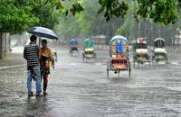
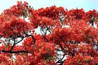
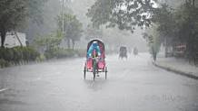
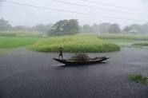
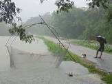
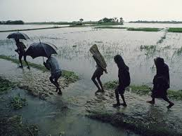
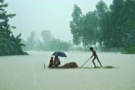

Live In Peace In Nature
Bangladesh is a land of six seasons and land of beauties.Each season have differnt natures and beauties.
People in Bangladesh enjoys six seasons doing various activities.Summer,Rainy,Autumn,Late Autumn,Winter and Spring are
the six seasons.
Story
Photo
Location
Story
Photo
Location
Bangladesh is a land of six seasons and a land of beauties. The summer is the first season that lasts for Baishakh and Jaisthya.
It is the hottest and tiring season. It appears with Fruits and flowers but is accompanied with dusty storm that sometimes causes much
harm to men animals and plants. It sometimes blows away trees and houses and sometimes causes death to men and animals. During this season,
the earth comes nearer to the sun and gets heat and light. The day becomes longer than the night. As a result the earth becomes so hot that
man cannot bear the heat. The rivers, ponds, canals ad pools dry up. People sweat and get thirst and triad out of extremes heat. Sometimes
strong north-east storm blows away trees and roofs of our houses. Sometimes it causes death to away men ad animals; so, it is called kal-baishakhi.
The summer is the season of fruits and flowers. Mangoes, Jackfruits, black-berries, litchis, melons and many other juicy-fruits grow in this season.
Various kinds of flowers also blossom in this time. And various kids of another fruits ripen. The boy’s gifts enjoyed the summer holidays.
In this season people suffer for want of water. Any diseases like cholera small pox and measles break out. I addition to these, men, animals,
ad plants fall a victim to storm ad cyclones. Sometimes drought destroys crops. Despite of its defects this season makes soil soft for easy cultivation.
It grows us plenty of fruits and flowers. So, we welcomed it.
Of the six seasons in Bangladesh the rainy season is the most important due to its contribution towards our agriculture. It is also a very beautiful season.
It comes just after the summer. During the rainy season, the sky remains covered with clouds most of the time. Thunderstorms are very frequent.
Due to the heavy and incessant rainfalls, wells, ponds, rivers, canals, “lakes, etc. become full to the brim. Lowlands go underwater and look like a sea.
The rainy season is very important for our agriculture. It does a lot of good for us. Farmers anxiously wait for the rain as cultivation depends on rain.
Without rain, the fields cannot be plowed. Much rain is necessary for growing paddy and jute. Everything becomes full of water and the scarcity of water is no longer felt.
This season is vital for the growth of vegetation. Hence, we can say that the vast greenery of Bangladesh is the bounty of the rainy season.
Sundarbans is the largest mangrove forest on earth and a UNESCO world heritage site.Sundarbans is located in between two neighbouring countries
Bangladesh and India.Majority of the forest is located in Bangladesh.It is home of the last remaining Bengal tigers in the world and much other wildlife.
Every year many tourists come Bangladesh to visit Sundarbans.Its beauty attracts all people accross the world.The environment of Sundarbans is
tranquilizing and visiting this forest could be a once in a lifetime experience.
Cox's Bazar is the longest unbroken sandy beach in the world,125 km in lengrh.It is the most popular tourist spot among the locals and foreigners.
Perfect place to relax at the end of a long trip.To avoid the crowd,stay on a resort with their own private beach.The Wholesale Fish Market in Cox's
Bazar would be an interesting place to visit while you are here.
Chittagong Hill Tracts area us a naturally beautiful place full of beautiful hills.It is home of many tribal groups of Bangladesh.This is the best place
in Bangladesh for adventure travel.You can trek deep inside the hills for many days here if you can manage permission from the local authority.Also
you can meet different tribal groups in this region and see their lifestyles.The most beautiful river in Bangladesh called Sangu river is located in
this area.A boat ride in Sangu during monsson could be a great experience.






